- 00 开篇词 这样入门Go，才能少走弯路.md.html
- 01 前世今生：你不得不了解的Go的历史和现状.md.html
- 02 拒绝“Hello and Bye”：Go语言的设计哲学是怎么一回事？.md.html
- 03 配好环境：选择一种最适合你的Go安装方法.md.html
- 04 初窥门径：一个Go程序的结构是怎样的？.md.html
- 05 标准先行：Go项目的布局标准是什么？.md.html
- 06 构建模式：Go是怎么解决包依赖管理问题的？.md.html
- 07 构建模式：Go Module的6类常规操作.md.html
- 08 入口函数与包初始化：搞清Go程序的执行次序.md.html
- 09 即学即练：构建一个Web服务就是这么简单.md.html
- 10 变量声明：静态语言有别于动态语言的重要特征.md.html
- 11 代码块与作用域：如何保证变量不会被遮蔽？.md.html
- 12 基本数据类型：Go原生支持的数值类型有哪些？.md.html
- 13 基本数据类型：为什么Go要原生支持字符串类型？.md.html
- 14 常量：Go在“常量”设计上的创新有哪些？.md.html
- 15 同构复合类型：从定长数组到变长切片.md.html
- 16 复合数据类型：原生map类型的实现机制是怎样的？.md.html
- 17 复合数据类型：用结构体建立对真实世界的抽象.md.html
- 18 控制结构：if的“快乐路径”原则.md.html
- 19 控制结构：Go的for循环，仅此一种.md.html
- 20 控制结构：Go中的switch语句有哪些变化？.md.html
- 21 函数：请叫我“一等公民”.md.html
- 22 函数：怎么结合多返回值进行错误处理？.md.html
- 23 函数：怎么让函数更简洁健壮？.md.html
- 24 方法：理解“方法”的本质.md.html
- 25 方法：方法集合与如何选择receiver类型？.md.html
- 26 方法：如何用类型嵌入模拟实现“继承”？.md.html
- 27 即学即练：跟踪函数调用链，理解代码更直观.md.html
- 28 接口：接口即契约.md.html
- 29 接口：为什么nil接口不等于nil？.md.html
- 30 接口：Go中最强大的魔法.md.html
- 31 并发：Go的并发方案实现方案是怎样的？.md.html
- 32 并发：聊聊Goroutine调度器的原理.md.html
- 33 并发：小channel中蕴含大智慧.md.html
- 34 并发：如何使用共享变量？.md.html
- 35 即学即练：如何实现一个轻量级线程池？.md.html
- 36 打稳根基：怎么实现一个TCP服务器？（上）.md.html
- 37 代码操练：怎么实现一个TCP服务器？（中）.md.html
- 38 成果优化：怎么实现一个TCP服务器？（下）.md.html
- 39 驯服泛型：了解类型参数.md.html
- 40 驯服泛型：定义泛型约束.md.html
- 41 驯服泛型：明确使用时机.md.html
- 元旦快乐 这是一份暂时停更的声明.md.html
- 加餐 作为Go Module的作者，你应该知道的几件事.md.html
- 加餐 如何拉取私有的Go Module？.md.html
- 加餐 我“私藏”的那些优质且权威的Go语言学习资料.md.html
- 加餐 聊聊Go 1.17版本的那些新特性.md.html
- 加餐 聊聊Go语言的指针.md.html
- 加餐 聊聊最近大热的Go泛型.md.html
- 大咖助阵 叶剑峰：Go语言中常用的那些代码优化点.md.html
- 大咖助阵 大明：Go泛型，泛了，但没有完全泛.md.html
- 大咖助阵 孔令飞：从小白到“老鸟”，我的Go语言进阶之路.md.html
- 大咖助阵 徐祥曦：从销售到分布式存储工程师，我与 Go 的故事.md.html
- 大咖助阵 曹春晖：聊聊 Go 语言的 GC 实现.md.html
- 大咖助阵 海纳：聊聊语言中的类型系统与泛型.md.html
- 期中测试 一起检验下你的学习成果吧.md.html
- 用户故事 罗杰：我的Go语言学习之路.md.html
- 结束语 和你一起迎接Go的黄金十年.md.html
- 结课测试 快来检验下你的学习成果吧！.md.html
- 捐赠
大咖助阵 曹春晖：聊聊 Go 语言的 GC 实现
作者注：本文只作了解，不建议作为面试题考察。
你好，我是曹春晖，是《Go 语言高级编程》的作者之一。
今天我想跟你分享一下 Go 语言内存方面的话题，聊一聊Go语言中的垃圾回收（GC）机制的实现，希望你能从中有所收获。
武林秘籍救不了段错误
在各种流传甚广的 C 语言葵花宝典里，一般都有这么一条神秘的规则，不能返回局部变量：
int * func(void) {
int num = 1234;
/* ... */
return #
}
duang!
当函数返回后，函数的栈帧（stack frame）就会被销毁，引用了被销毁位置的内存，轻则数据错乱，重则 segmentation fault。
可以说，即使经过了八十一难，终于成为了 C 语言绝世高手，我们还是逃不过复杂的堆上对象引用关系导致的 dangling pointer：
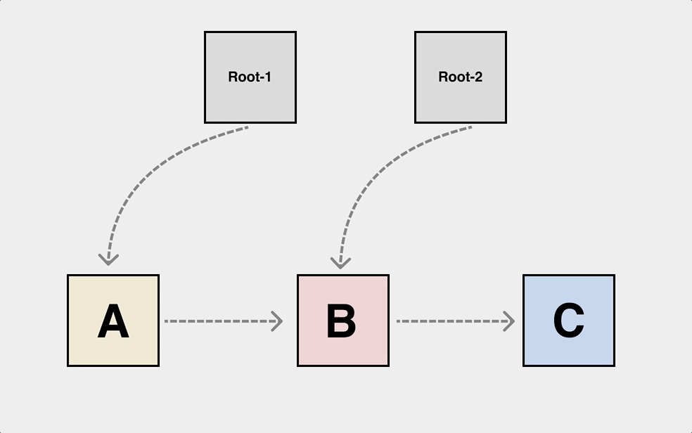
你看，在这张图中，当 B 被 free 掉之后，应用程序依然可能会使用指向 B 的指针，这就是比较典型的 dangling pointer 问题，堆上的对象依赖关系可能会非常复杂。所以，我们要正确地写出 free 逻辑，还得先把对象图给画出来。
不过，依赖人去处理复杂的对象内存管理的问题是不科学、不合理的。C 和 C++ 程序员已经被折磨了数十年，我们不应该再重蹈覆辙了，于是，后来的很多编程语言就用上垃圾回收（GC）机制。
GC 拯救程序员
垃圾回收（Garbage Collection）也被称为自动内存管理技术，在现代编程语言中使用得相当广泛，常见的 Java、Go、C# 均在语言的 runtime 中集成了相应的实现。
在传统的不带GC的编程语言中，我们需要关注对象的分配位置，要自己去选择对象是分配在堆还是栈上，但在 Go 这门有 GC 的语言中，集成了逃逸分析功能来帮助我们自动判断对象应该在堆上还是栈上，我们可以使用 go build -gcflags="-m" 来观察逃逸分析的结果：
package main
func main() {
var m = make([]int, 10240)
println(m[0])
}
你可以看到，较大的对象也会被放在堆上。
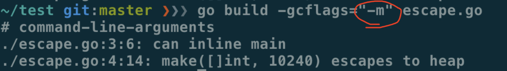
这里，执行 gcflags=“-m” 的输出，我们就可以看到发生了逃逸。
若对象被分配在栈上，它的管理成本就比较低，我们通过挪动栈顶寄存器就可以实现对象的分配和释放。若对象被分配在堆上，我们就要经历层层的内存申请过程。但这些流程对用户都是透明的，在编写代码时我们并不需要在意它。只有需要优化时，我们才需要研究具体的逃逸分析规则。
逃逸分析与垃圾回收结合在一起，极大地解放了程序员们的心智，我们在编写代码时，似乎再也没必要去担心内存的分配和释放问题了。
然而，一切抽象皆有成本，这个成本要么花在编译期，要么花在运行期。
GC 这种方案是选择在运行期来解决问题，不过在极端场景下 GC 本身引起的问题依然是令人难以忽视的：
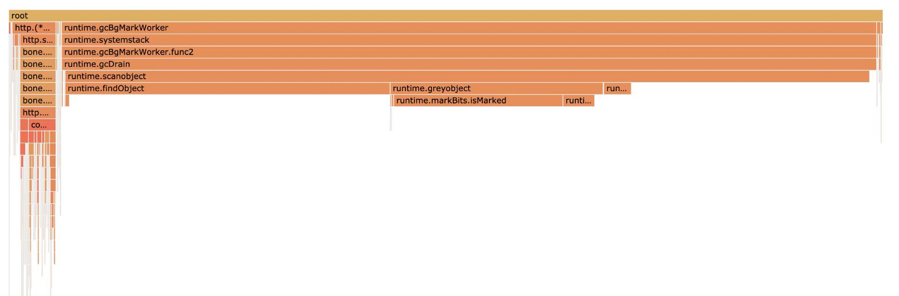
这张图的场景是在内存中缓存了上亿的 kv，这时 GC 使用的 CPU 甚至占到了总 CPU 占用的 90% 以上。简单粗暴地在内存中缓存对象，到头来发现 GC 成为了 CPU 杀手，吃掉了大量的服务器资源，这显然不是我们期望的结果。
想要正确地分析原因，就需要我们对 GC 本身的实现机制有稍微深入一些的理解。
内存管理的三个参与者
当讨论内存管理问题时，我们主要会讲三个参与者，mutator，allocator 和 garbage collector。
- mutator 指的是我们的应用，也就是 application，我们将堆上的对象看作一个图，跳出应用来看的话，应用的代码就是在不停地修改这张堆对象图里的指向关系。下面的图可以帮我们理解 mutator 对堆上的对象的影响：
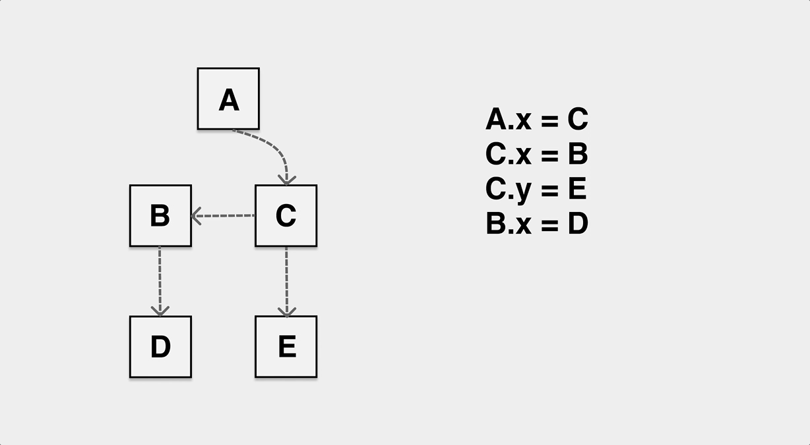
allocator 就很好理解了，指的是内存分配器，应用需要内存的时候都要向 allocator 申请。allocator 要维护好内存分配的数据结构，在多线程场景下工作的内存分配器还需要考虑高并发场景下锁的影响，并针对性地进行设计以降低锁冲突。
collector 是垃圾回收器。死掉的堆对象、不用的堆内存都要由 collector 回收，最终归还给操作系统。当 GC 扫描流程开始执行时，collector 需要扫描内存中存活的堆对象，扫描完成后，未被扫描到的对象就是无法访问的堆上垃圾，需要将其占用内存回收掉。
三者的交互过程可以用下图来表示：
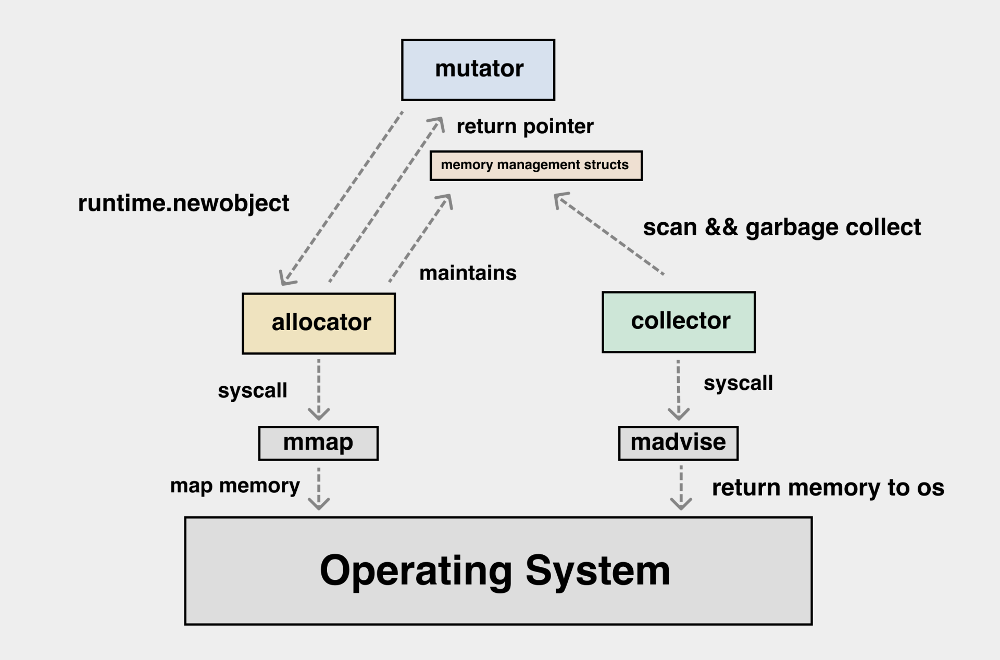
我们可以看到，应用需要在堆上申请内存时，会由编译器帮程序员自动调用runtime.newobject，这时 allocator 会使用 mmap 这个系统调用从操作系统中申请内存，若 allocator 发现之前申请的内存还有富余，会从本地预先分配的数据结构中划分出一块内存，并把它以指针的形式返回给应用。在内存分配的过程中，allocator 要负责维护内存管理对应的数据结构。
而collector 要扫描的就是 allocator 管理的这些数据结构，应用不再使用的部分便应该被回收，通过 madvise 这个系统调用返还给操作系统。
现在我们来看看这些交互的细节吧。
分配内存
应用程序使用 mmap 向 OS 申请内存，操作系统提供的接口比较简单，mmap 返回的结果是连续的内存区域。
mutator 申请内存是以应用视角来看问题。比如说，我需要的是某一个 struct和某一个 slice 对应的内存，这与从操作系统中获取内存的接口之间还有一个鸿沟。这就需要由 allocator 进行映射与转换，将以“块”来看待的内存与以“对象”来看待的内存进行映射：
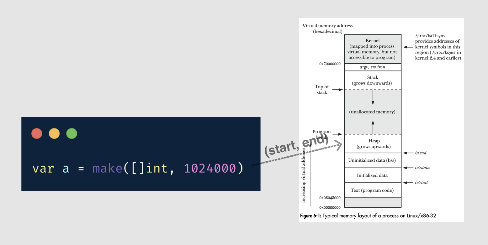
你可以从上面这张图看到，在应用的视角看，我们需要初始化的 a 是一个 1024000 长度的 int 切片；在内存管理的视角来看，我们需要管理的只是 start、offset 对应的一段内存。
在现代 CPU 上，除了内存分配的正确性以外，我们还要考虑分配过程的效率问题，应用执行期间小对象会不断地生成与销毁，如果每一次对象的分配与释放都需要与操作系统交互，那么成本是很高的。这就需要我们在应用层设计好内存分配的多级缓存，尽量减少小对象高频创建与销毁时的锁竞争，这个问题在传统的 C/C++ 语言中已经有了解法，那就是 tcmalloc：
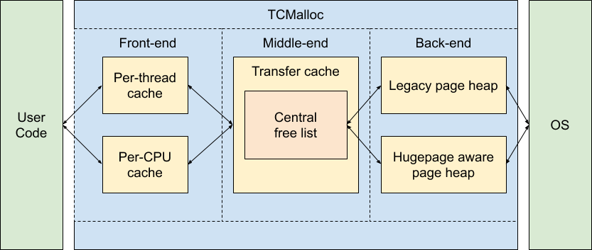
你可以看到，tcmalloc 通过维护一套多级缓存结构，降低了应用内存分配过程中对全局锁的使用频率，使小对象的内存分配做到了尽量无锁。
Go 语言的内存分配器基本是 tcmalloc 的 1:1 搬运……毕竟都是 Google 的项目。
在 Go 语言中，根据对象中是否有指针以及对象的大小，将内存分配过程分为三类：
- tiny ：size < 16 bytes && has no pointer(noscan)；
- small ：has pointer(scan) || (size >= 16 bytes && size <= 32 KB)；
- large ：size > 32 KB。
接下来我们一个个分析。在内存分配过程中，最复杂的就是 tiny 类型的分配。
我们可以将内存分配的路径与 CPU 的多级缓存作类比，这里 mcache 内部的 tiny 可以类比为 L1 cache，而 alloc 数组中的元素可以类比为 L2 cache，全局的 mheap.mcentral 结构为 L3 cache，mheap.arenas 是 L4，L4 是以页为单位将内存向下派发的，由 pageAlloc 来管理 arena 中的空闲内存。具体你可以看下这张表：
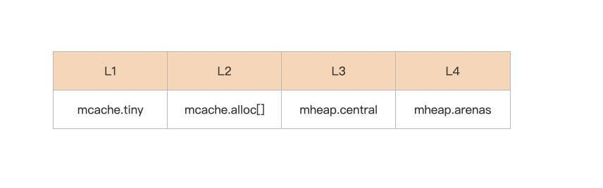
如果 L4 也没法满足我们的内存分配需求，那我们就需要向操作系统去要内存了。
和 tiny 的四级分配路径相比，small 类型的内存没有本地的 mcache.tiny 缓存，其余的与 tiny 分配路径完全一致：
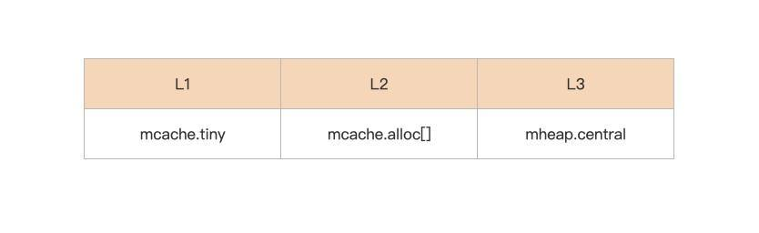
large 内存分配稍微特殊一些，没有前面这两类这样复杂的缓存流程，而是直接从 mheap.arenas 中要内存，直接走 pageAlloc 页分配器。
页分配器在 Go 语言中迭代了多个版本，从简单的 freelist 结构，到 treap 结构，再到现在最新版本的 radix 结构，它的查找时间复杂度也从 O(N) -> O(log(n)) -> O(1)。
在当前版本中，我们只需要知道常数时间复杂度就可以确定空闲页组成的 radix tree 是否能够满足内存分配需求。若不满足，则要对 arena 继续进行切分，或向操作系统申请更多的 arena。
只看这些分类文字不太好理解，接下来我们看看 arenas、page、mspan、alloc 这些概念是怎么关联在一起组成 Go 的内存分配流程的。
内存分配的数据结构之间的关系
arenas 是 Go 向操作系统申请内存时的最小单位，每个 arena 为 64MB 大小，在内存中可以部分连续，但整体是个稀疏结构。
单个 arena 会被切分成以 8KB 为单位的 page，由 page allocator 管理，一个或多个 page 可以组成一个 mspan，每个 mspan 可以按照 sizeclass 再划分成多个 element。同样大小的 mspan 又分为 scan 和 noscan 两种，分别对应内部有指针的 object 和内部没有指针的 object。
之前讲到的四级分配结构如下图：
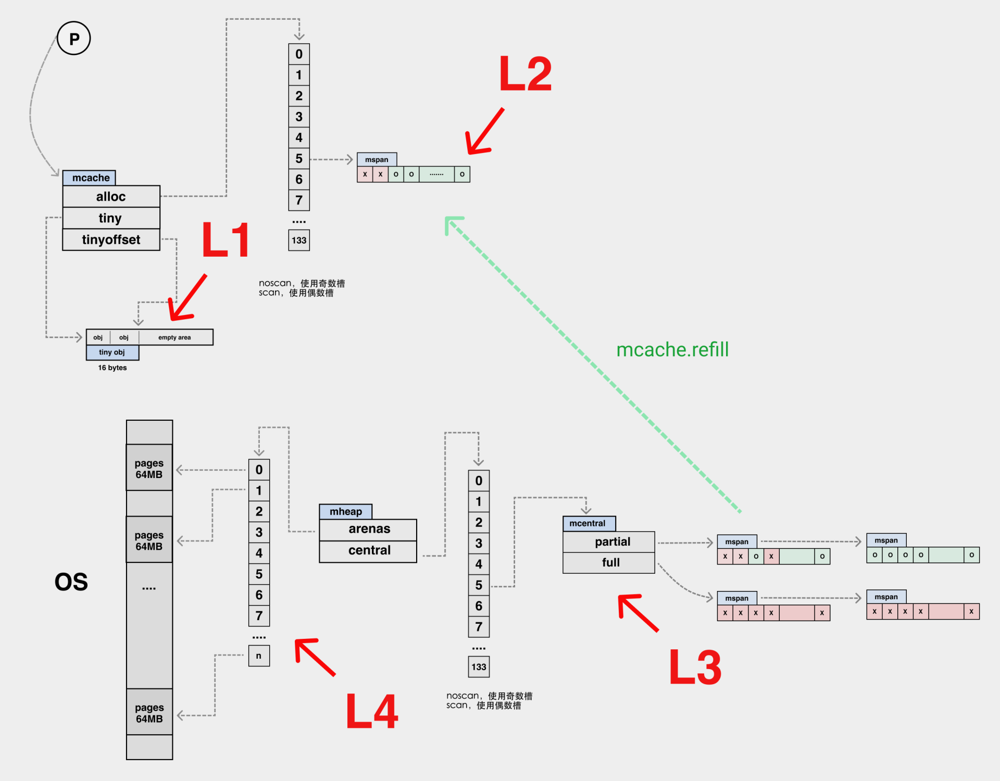
你可以从上图清晰地看到内存分配的多级路径，我们可以再研究一下这里面的 mspan。每一个 mspan 都有一个 allocBits 结构，从 mspan 里分配 element 时，我们只要将 mspan 中对应该 element 位置的 bit 位置一就可以了，其实就是将 mspan 对应 allocBits 中的对应 bit 位置一。每一个 mspan 都会对应一个 allocBits 结构，如下图：
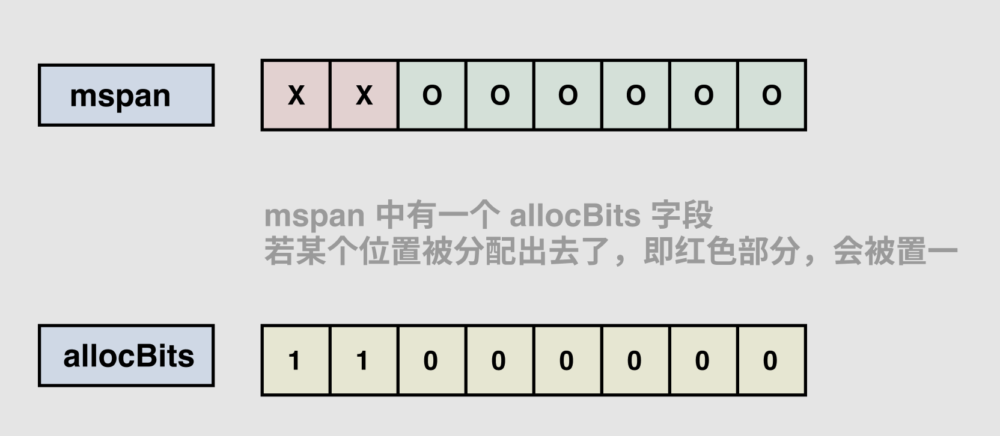
当然，在代码中还有一些位操作优化（如freeIndex、allocCache），你课后可以再去探索一下。
了解了Go语言中内存管理和内存分配的基础知识之后，我们就可以具体看看Go语言中垃圾回收的实现。
垃圾回收
Go 语言使用了并发标记与清扫算法作为它的 GC 实现。
标记、清扫算法是一种古老的 GC 算法，是指将内存中正在使用的对象进行标记，之后清扫掉那些未被标记的对象的一种垃圾回收算法。并发标记与清扫重点在并发，是指垃圾回收的标记和清扫过程能够与应用代码并发执行。但并发标记清扫算法的一大缺陷是无法解决内存碎片问题，而 tcmalloc 恰好一定程度上缓解了内存碎片问题，两者配合使用相得益彰。
但这并不是说 tcmalloc 完全没有内存碎片，不信你可以在代码里搜搜 max waste。
垃圾分类
进行垃圾回收之前，我们要先对内存垃圾进行分类，主要可以分为语义垃圾和语法垃圾两类，但并不是所有垃圾都可以被垃圾回收器回收。
语义垃圾（semantic garbage），有些场景也被称为内存泄露，指的是从语法上可达（可以通过局部、全局变量被引用）的对象，但从语义上来讲他们是垃圾，垃圾回收器对此无能为力。
我们来看一个语义垃圾在 Go 语言中的实例：
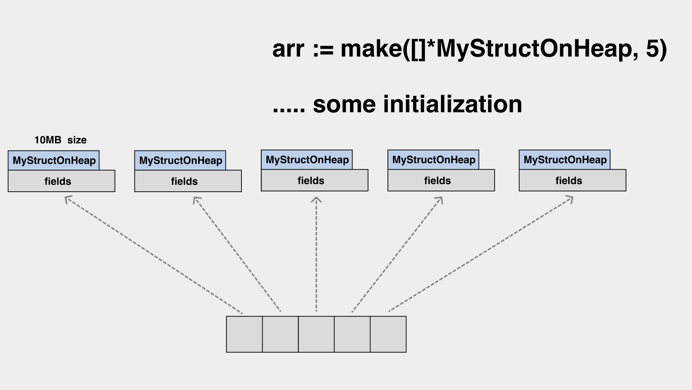
这里，我们初始化了一个 slice，元素均为指针，每个指针都指向了堆上 10MB 大小的一个对象。
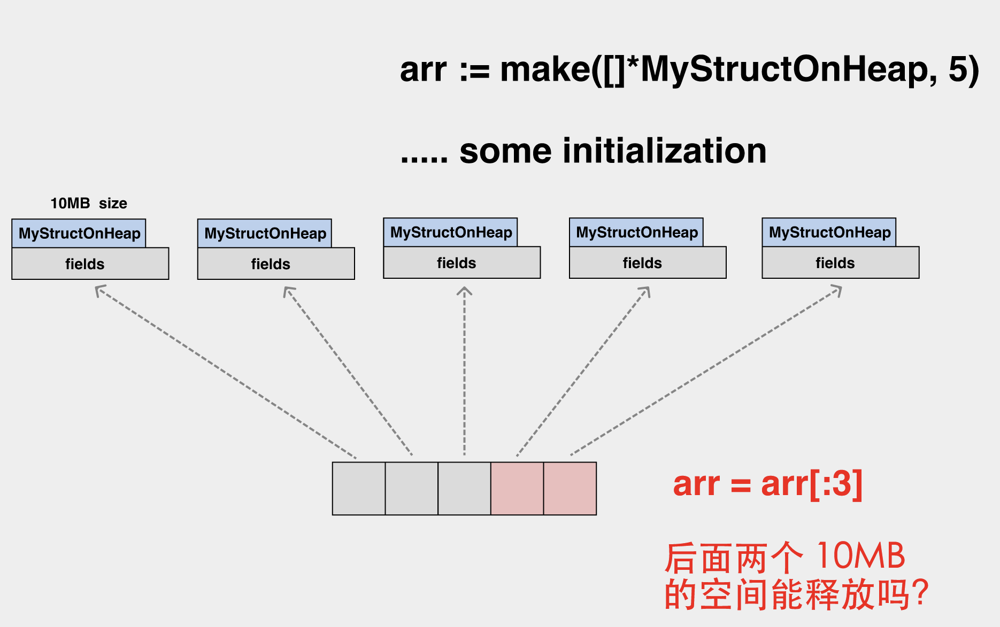
当这个 slice 缩容时，底层数组的后两个元素已经无法再访问了，但它关联的堆上内存依然是无法释放的。
碰到类似的场景，你可能需要在缩容前，先将数组元素置为 nil。
另外一种内存垃圾就是语法垃圾（syntactic garbage），讲的是那些从语法上无法到达的对象，这些才是垃圾收集器主要的收集目标。
我们用一个简单的例子来理解一下语法垃圾：
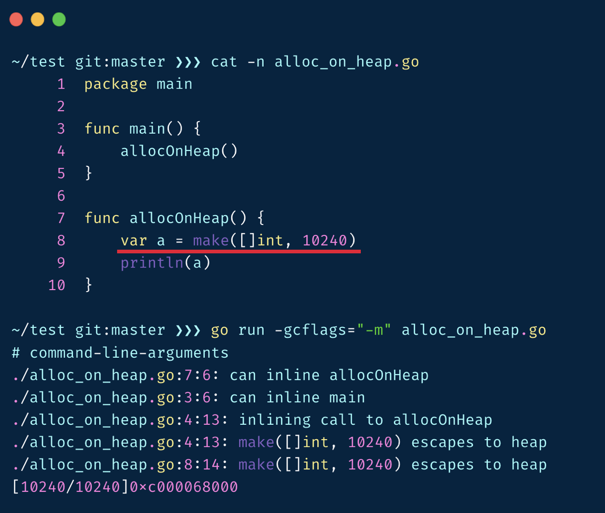
这段代码中，在 allocOnHeap 返回后，堆上的 a 无法访问，便成为了语法垃圾。
现在，我们已经明白了垃圾回收的对象是语法垃圾，那Go GC的执行流程具体是怎么样的呢？
GC 流程
Go 的每一轮版本迭代几乎都会对 GC 做优化。经过多次优化后，较新的 GC 流程如下图：
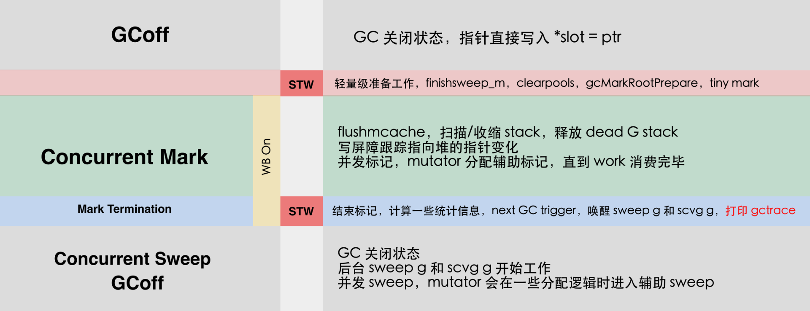
在这张图中，你可以看到，在并发标记开始前和并发标记终止时，有两个短暂的 stw，该 stw 可以使用 pprof 的 pauseNs 来观测，也可以直接采集到监控系统中：
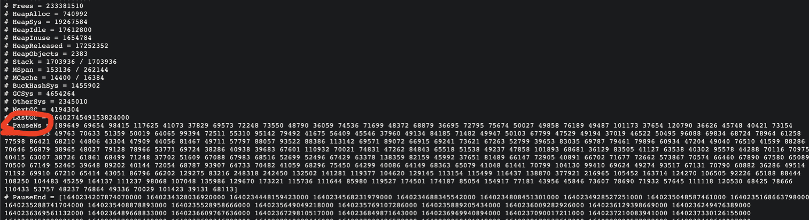
监控系统中的 PauseNs 就是每次 stw 的时长。尽管官方声称 Go 的 stw 已经是亚毫秒级了，但我们在高压力的系统中仍然能够看到毫秒级的 stw。
对Go GC流程有了一些基本了解后，我们现在“划重点”，具体看看 Go GC中的那些关键流程和关键问题。
标记流程
Go 语言使用三色抽象作为其并发标记的实现。所以这里我们首先要理解三种颜色的抽象：
- 黑表示已经扫描完毕，子节点扫描完毕（gcmarkbits = 1，且在队列外）；
- 灰表示已经扫描完毕，子节点未扫描完毕（gcmarkbits = 1, 在队列内）；
- 白表示未扫描，collector 不知道任何相关信息。
使用三色抽象，主要是为了能让垃圾回收流程与应用流程并发执行，这样将对象扫描过程拆分为多个阶段，不需要一次性完成整个扫描流程。
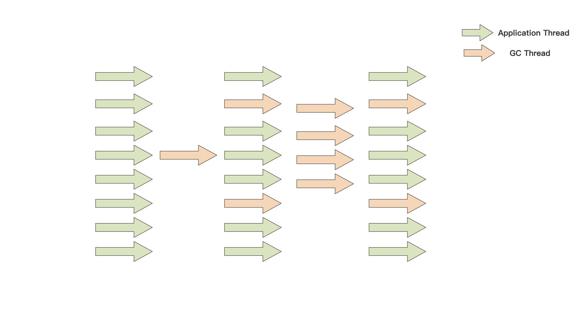
GC 扫描的起点是根对象，忽略掉那些不重要的（finalizer 相关的先省略），常见的根对象可以参见下图：

所以在 Go 语言中，从根开始扫描的含义是从 .bss 段，.data 段以及 goroutine 的栈开始扫描，最终遍历整个堆上的对象树。
标记过程是一个广度优先的遍历过程。它是扫描节点，将节点的子节点推到任务队列中，然后递归扫描子节点的子节点，直到所有工作队列都被排空为止。
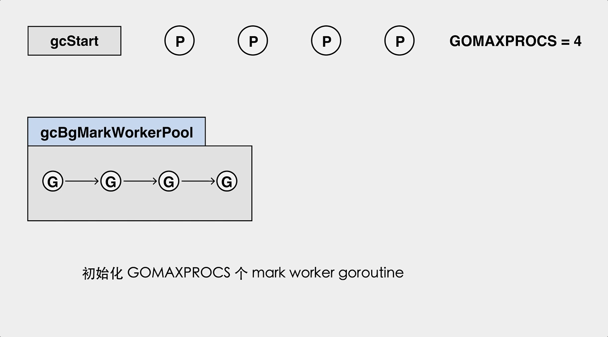
标记过程会将白色对象标记，并推进队列中变成灰色对象。我们可以看看 scanobject 的具体过程：
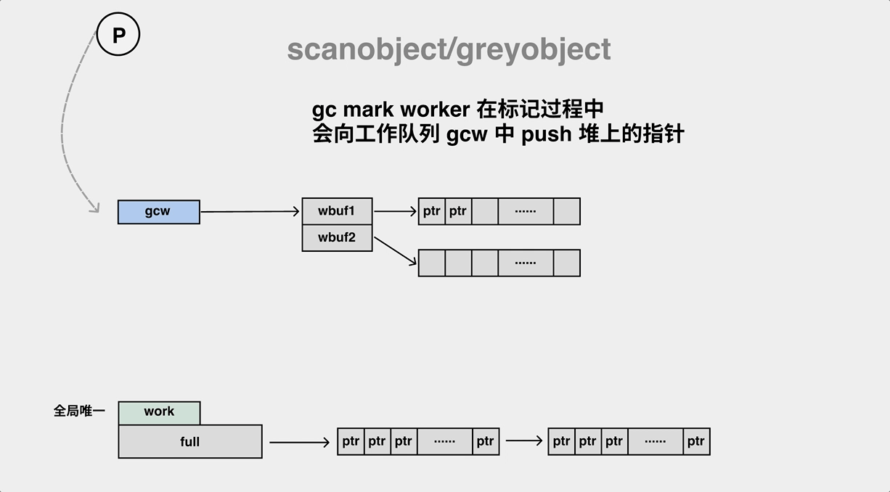
在标记过程中，gc mark worker 会一边从工作队列（gcw）中弹出对象，一边把它的子对象 push 到工作队列（gcw）中，如果工作队列满了，则要将一部分元素向全局队列转移。
我们知道，堆上对象本质上是图，会存储引用关系互相交叉的时候，在标记过程中也有简单的剪枝逻辑：
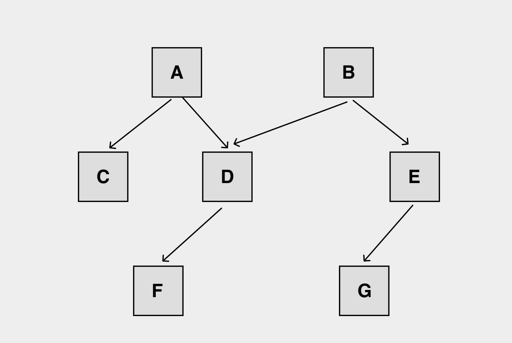
这里，D 是 A 和 B 的共同子节点，在标记过程中自然会减枝，防止重复标记浪费计算资源：
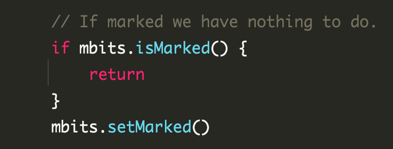
如果多个后台 mark worker 确实产生了并发，标记时使用的是 atomic.Or8，也是并发安全的：
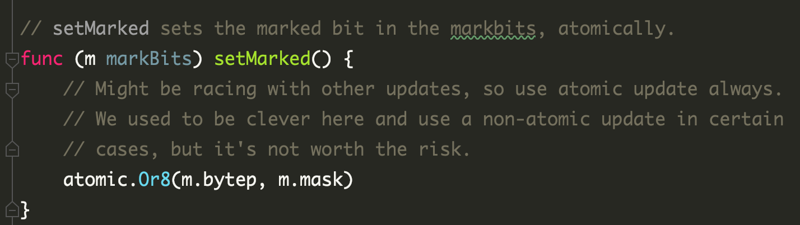
协助标记
当应用分配内存过快时，后台的 mark worker 无法及时完成标记工作，这时应用本身需要进行堆内存分配时，会判断是否需要适当协助 GC 的标记过程，防止应用因为分配过快发生 OOM。
碰到这种情况时，我们会在火焰图中看到对应的协助标记的调用栈：
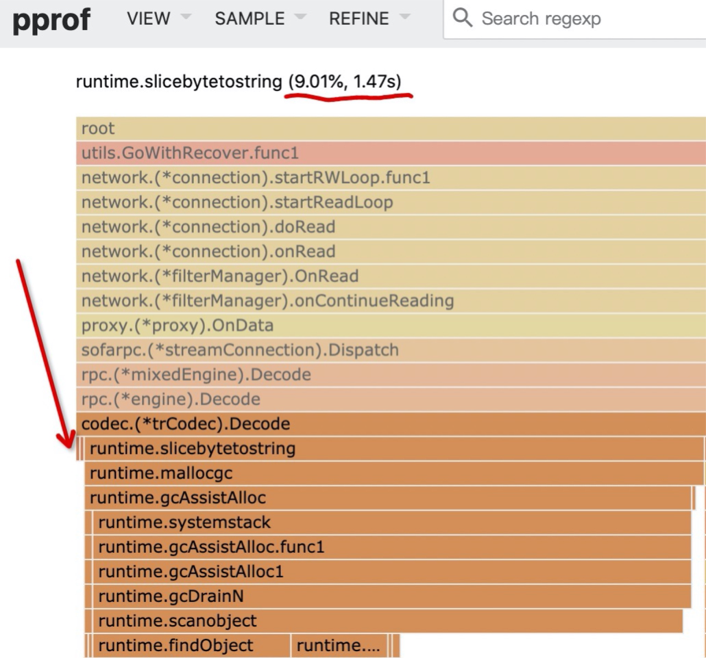
不过，协助标记会对应用的响应延迟产生影响，我们可以尝试降低应用的对象分配数量进行优化。Go 内部具体是通过一套记账还账系统来实现协助标记的流程的，这一部分不是我们这一讲的重点，如果你感兴趣，可以去看看这里 。
对象丢失问题
前面我们提到了 GC 线程/协程与应用线程/协程是并发执行的，在 GC 标记 worker 工作期间，应用还会不断地修改堆上对象的引用关系，这就可能导致对象丢失问题。下面是一个典型的应用与 GC 同时执行时，由于应用对指针的变更导致对象漏标记，从而被 GC 误回收的情况。
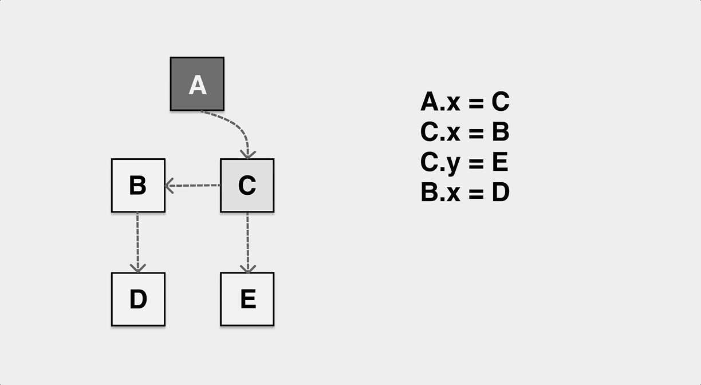
在这张图表现的 GC 标记过程中，应用动态地修改了 A 和 C 的指针，让 A 对象的内部指针指向了 B，C 的内部指针指向了 D。如果标记过程垃圾收集器无法感知到这种变化，最终 B 对象在标记完成后是白色，会被错误地认作内存垃圾被回收。
为了解决漏标，错标的问题，我们先需要定义“三色不变性”，如果我们的堆上对象的引用关系不管怎么修改，都能满足三色不变性，那么也不会发生对象丢失问题。三色不变性可以分为强三色不变性和弱三色不变性两种，
首先是强三色不变性（strong tricolor invariant），禁止黑色对象指向白色对象：
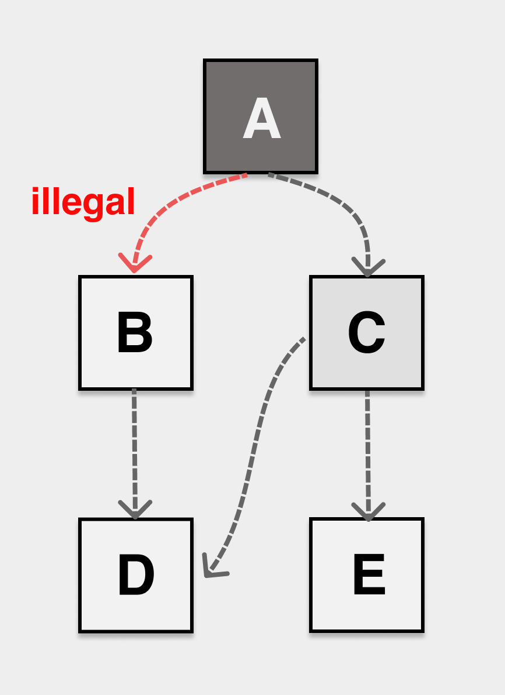
然后是弱三色不变性（weak tricolor invariant），黑色对象可以指向白色对象，但指向的白色对象，必须有能从灰色对象可达的路径：
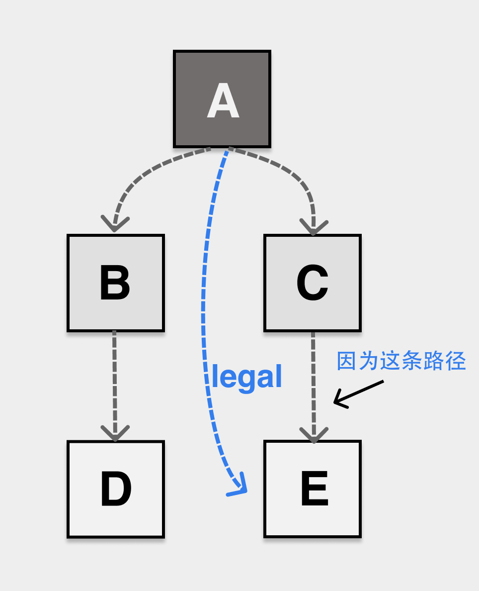
无论应用在与 GC 并发执行期间如何修改堆上对象的关系，只要修改之后，堆上对象能满足任意一种不变性，就不会发生对象的丢失问题。
而实现强/弱三色不变性均需要引入屏障技术。在 Go 语言中，使用写屏障，也就是 write barrier 来解决上述问题。
write barrier
这里barrier 的本质是 : snippet of code insert before pointer modify。不过，在并发编程领域也有 memory barrier，但这个含义与 GC 领域的barrier是完全不同的，在阅读相关材料时，你一定要注意不要混淆这两个概念。
Go 语言的 GC 只有 write barrier，没有 read barrier。
在应用进入 GC 标记阶段前的 stw 阶段，会将全局变量 runtime.writeBarrier.enabled 修改为 true，这时所有的堆上指针修改操作在修改之前便会额外调用 runtime.gcWriteBarrier：
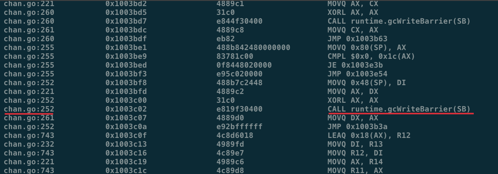
在反汇编结果中，我们可以通过行数找到原始的代码位置：
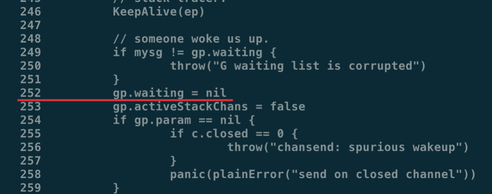
在GC领域中，常见的 write barrier 有两种：
Dijistra Insertion Barrier，指针修改时，指向的新对象要标灰：-

Yuasa Deletion Barrier，指针修改时，修改前指向的对象要标灰：- 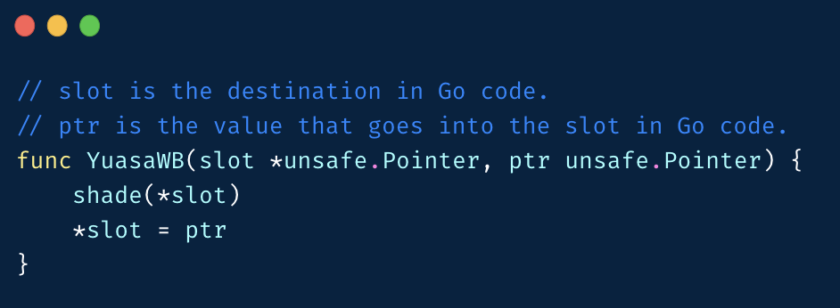
从理论上来讲，如果 Go 语言的所有对象都在堆上，使用上述两种屏障的任意一种，都不会发生对象丢失的问题。
但我们不要忽略，在 Go 语言中，还有很多对象被分配在栈上。栈上的对象操作极其频繁，给栈上对象增加写屏障成本很高，所以 Go 是不给栈上对象开启屏障的。
只对堆上对象开启写屏障的话，使用上述两种屏障其中的任意一种，都需要在 stw 阶段对栈进行重扫。所以经过多个版本的迭代，现在 Go 的写屏障混合了上述两种屏障，实现是这样的：
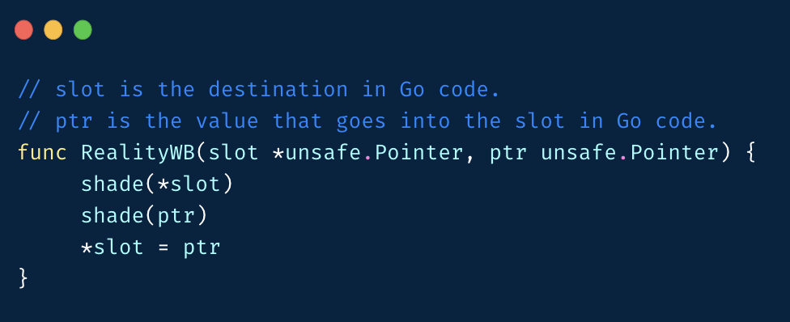
这和 Go 语言在混合屏障的 proposal 上的实现不太相符，本来 proposal 是这么写的：
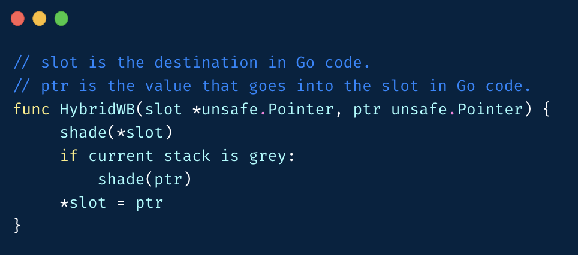
为什么会有这种差异呢？这主要是因为栈的颜色判断成本是很高的，官方最终还是选择了更为简单的实现，即指针断开的老对象和新对象都标灰的实现。
我们再来详细地看看前面两种屏障的对象丢失问题。
Dijistra Insertion Barrier 的对象丢失问题：- 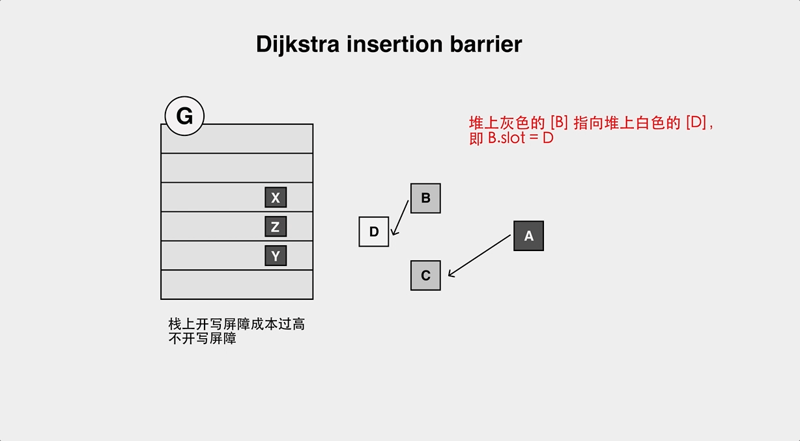
Yuasa Deletion Barrier 的对象丢失问题：- 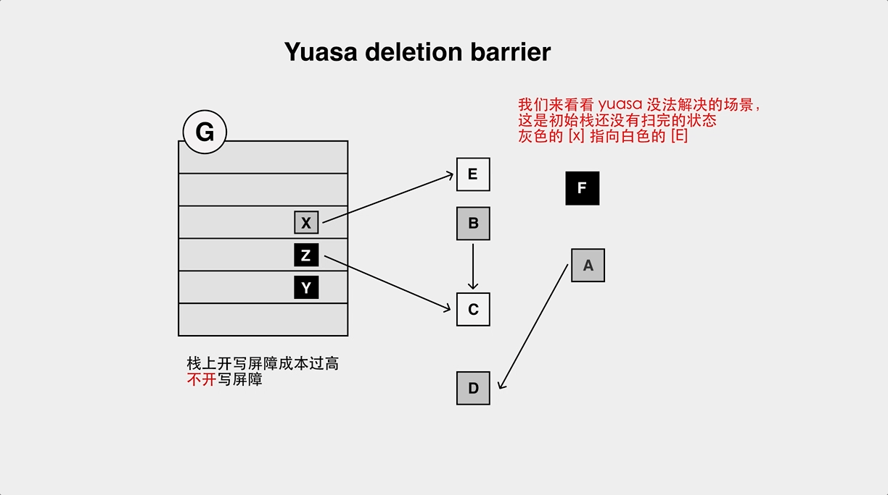
早期 Go 只使用了 Dijistra 屏障，但因为会有上述对象丢失问题，需要在第二个 stw 周期进行栈重扫（stack rescan）。当 goroutine 数量较多时，stw 时间会变得很长。
但单独使用任意一种 barrier ，又没法满足 Go 消除栈重扫的要求，所以最新版本中 Go 的混合屏障其实是 Dijistra Insertion Barrier + Yuasa Deletion Barrier。
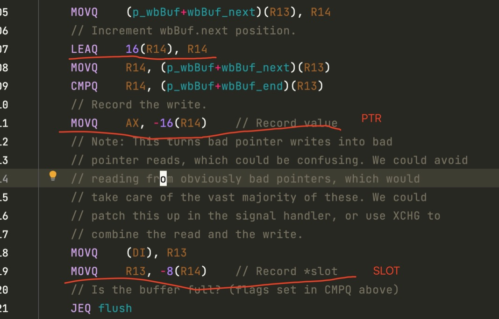
混合 write barrier 会将两个指针推到 p 的 wbBuf 结构去，我们来看看这个过程：
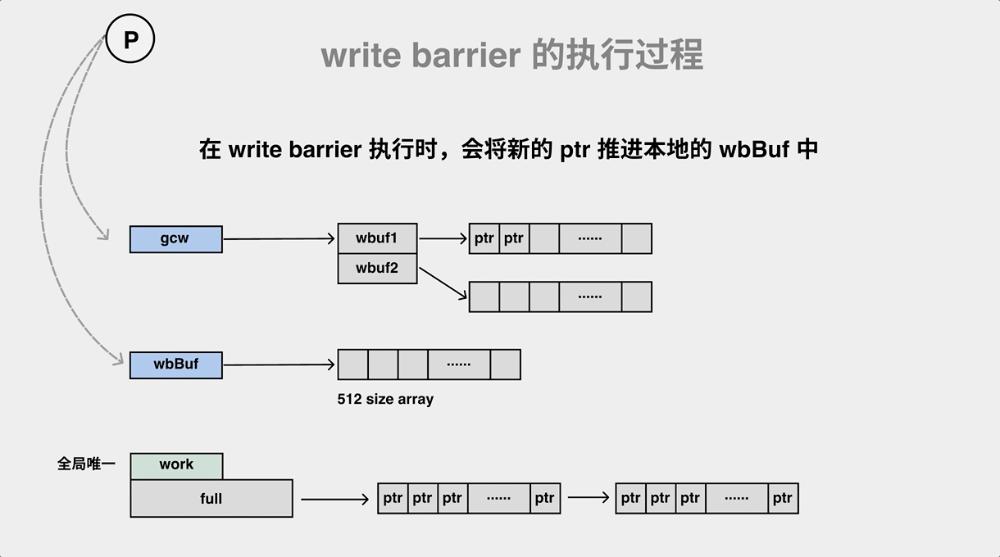
现在我们可以看看 mutator 和后台的 mark worker 在并发执行时的完整过程了：
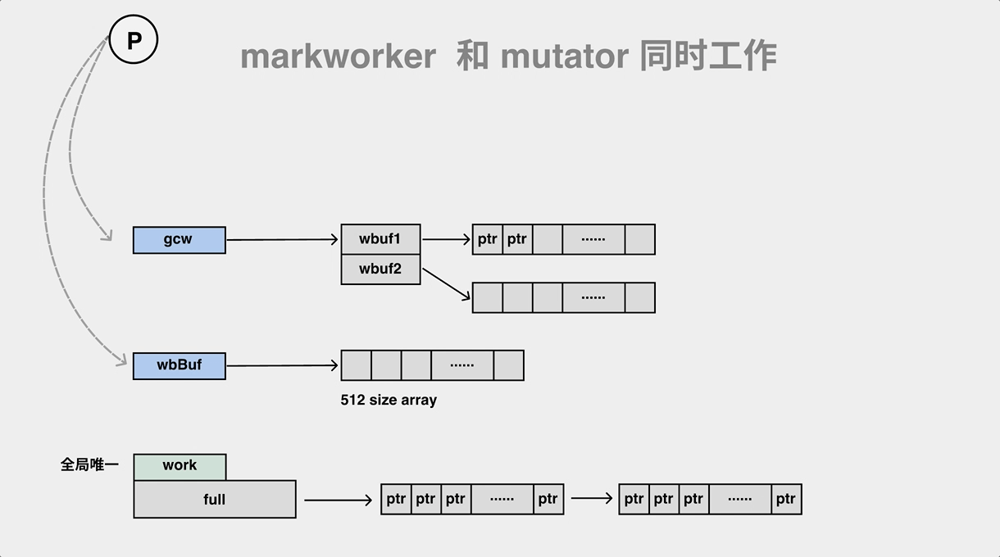
回收流程
相比复杂的标记流程，对象的回收和内存释放就简单多了。
进程启动时会有两个特殊 goroutine：
- 一个叫 sweep.g，主要负责清扫死对象，合并相关的空闲页；
- 一个叫 scvg.g，主要负责向操作系统归还内存。
(dlv) goroutines
* Goroutine 1 - User: ./int.go:22 main.main (0x10572a6) (thread 5247606)
Goroutine 2 - User: /usr/local/go/src/runtime/proc.go:367 runtime.gopark (0x102e596) [force gc (idle) 455634h24m29.787802783s]
Goroutine 3 - User: /usr/local/go/src/runtime/proc.go:367 runtime.gopark (0x102e596) [GC sweep wait]
Goroutine 4 - User: /usr/local/go/src/runtime/proc.go:367 runtime.gopark (0x102e596) [GC scavenge wait]
注意看这里的 GC sweep wait 和 GC scavenge wait， 就是这两个 goroutine。
当 GC 的标记流程结束之后，sweep goroutine 就会被唤醒，进行清扫工作，其实就是循环执行 sweepone -> sweep。针对每个 mspan，sweep.g 的工作是将标记期间生成的 bitmap 替换掉分配时使用的 bitmap：
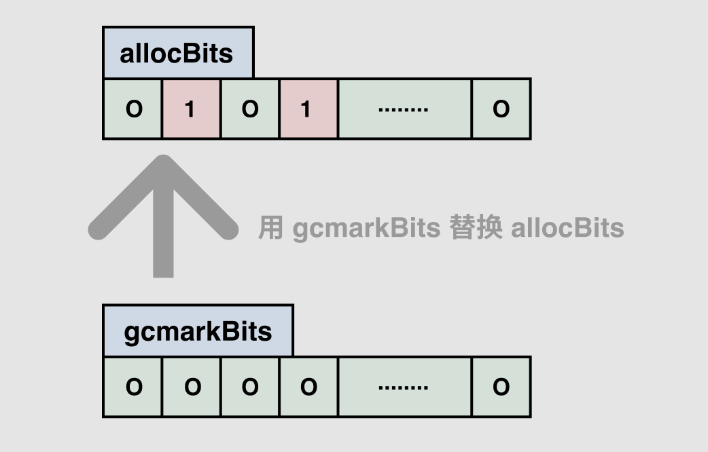
然后根据 mspan 中的槽位情况决定该 mspan 的去向：
- 如果 mspan 中存活对象数 = 0，也就是所有 element 都变成了内存垃圾，那执行 freeSpan -> 归还组成该 mspan 所使用的页，并更新全局的页分配器摘要信息；
- 如果 mspan 中没有空槽，说明所有对象都是存活的，将其放入 fullSwept 队列中；
- 如果 mspan 中有空槽，说明这个 mspan 还可以拿来做内存分配，将其放入 partialSweep 队列中。
之后“清道夫” scvg goroutine 被唤醒，执行线性流程，一路运行到将页内存归还给操作系统，也就是 bgscavenge -> pageAlloc.scavenge -> pageAlloc.scavengeOne -> pageAlloc.scavengeRangeLocked -> sysUnused -> madvise：
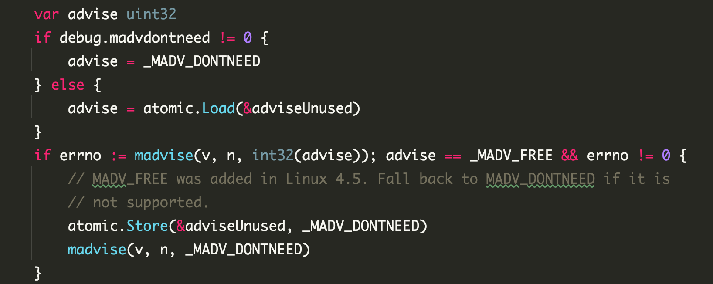
问题分析
从前面的基础知识中，我们可以总结出 Go 语言垃圾回收的关键点：
- 无分代；
- 与应用执行并发；
- 协助标记流程；
- 并发执行时开启 write barrier。
我们日常编码中就需要考虑这些关键点，进行一些针对性的设计与优化。比如，因为无分代，当我们遇到一些需要在内存中保留几千万 kv map 的场景（比如机器学习的特征系统）时，就需要想办法降低 GC 扫描成本。
又比如，因为有协助标记，当应用的 GC 占用的 CPU 超过 25% 时，会触发大量的协助标记，影响应用的延迟，这时也要对 GC 进行优化。
简单的业务场景，我们使用 sync.Pool 就可以带来较好的优化效果，若碰到一些复杂的业务场景，还要考虑 offheap 之类的欺骗 GC 的方案，比如 dgraph 的方案。因为我们这讲聚焦于内存分配和 GC 的实现，就不展开介绍这些具体方案了。
另外，这讲中涉及的所有内存管理的名词，你都可以在：https://memorymanagement.org 上找到。如果你还对垃圾回收的理论还有什么不解，我推荐你阅读：《GC Handbook》，它可以解答你所有的疑问。
© 2019 - 2023 Liangliang Lee. Powered by gin and hexo-theme-book.